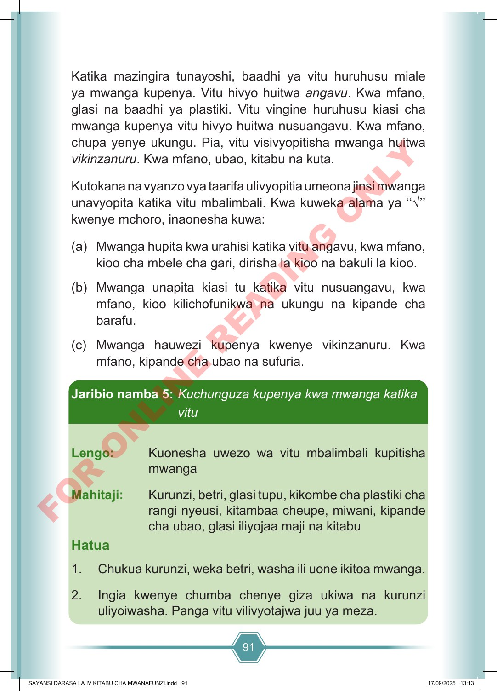

91 Katika mazingira tunayoshi, baadhi ya vitu huruhusu miale ya mwanga kupenya. Vitu hivyo huitwa angavu. Kwa mfano, glasi na baadhi ya plastiki. Vitu vingine huruhusu kiasi cha mwanga kupenya vitu hivyo huitwa nusuangavu. Kwa mfano, chupa yenye ukungu. Pia, vitu visivyopitisha mwanga huitwa vikinzanuru. Kwa mfano, ubao, kitabu na kuta. Kutokana na vyanzo vya taarifa ulivyopitia umeona jinsi mwanga unavyopita katika vitu mbalimbali. Kwa kuweka alama ya “√” kwenye mchoro, inaonesha kuwa: (a) Mwanga hupita kwa urahisi katika vitu angavu, kwa mfano, kioo cha mbele cha gari, dirisha la kioo na bakuli la kioo. (b) Mwanga unapita kiasi tu katika vitu nusuangavu, kwa mfano, kioo kilichofunikwa na ukungu na kipande cha barafu. (c) Mwanga hauwezi kupenya kwenye vikinzanuru. Kwa mfano, kipande cha ubao na sufuria. Jaribio namba 5: Kuchunguza kupenya kwa mwanga katika vitu Lengo: Kuonesha uwezo wa vitu mbalimbali kupitisha mwanga Mahitaji: Kurunzi, betri, glasi tupu, kikombe cha plastiki cha rangi nyeusi, kitambaa cheupe, miwani, kipande cha ubao, glasi iliyojaa maji na kitabu Hatua 1. Chukua kurunzi, weka betri, washa ili uone ikitoa mwanga. 2. Ingia kwenye chumba chenye giza ukiwa na kurunzi uliyoiwasha. Panga vitu vilivyotajwa juu ya meza. SAYANSI DARASA LA IV KITABU CHA MWANAFUNZI.indd 91 SAYANSI DARASA LA IV KITABU CHA MWANAFUNZI.indd 91 17/09/2025 13:13 17/09/2025 13:13 F O R O N L I N E R E A D I N G O N L Y